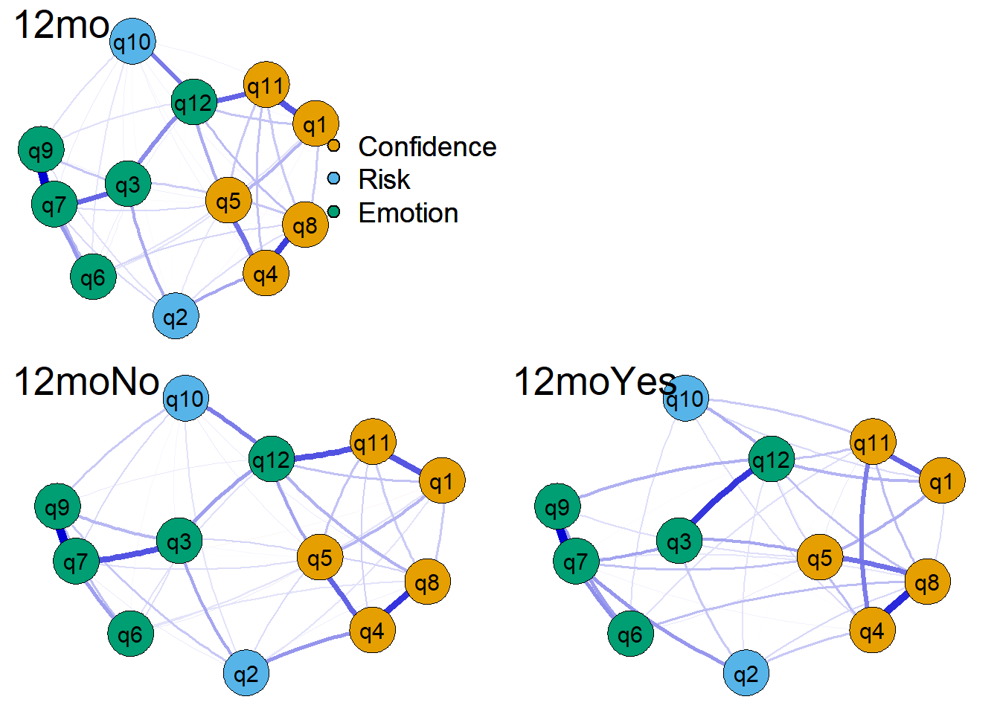
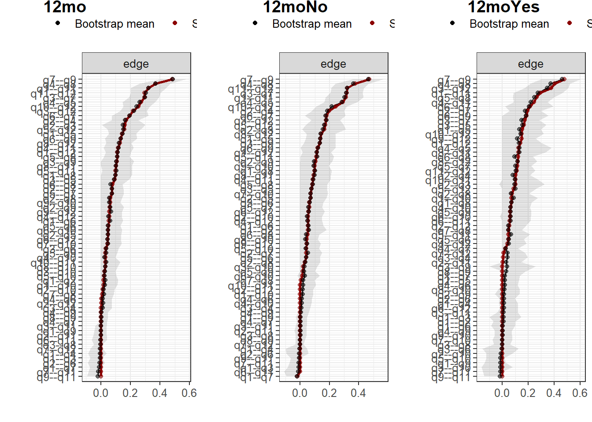
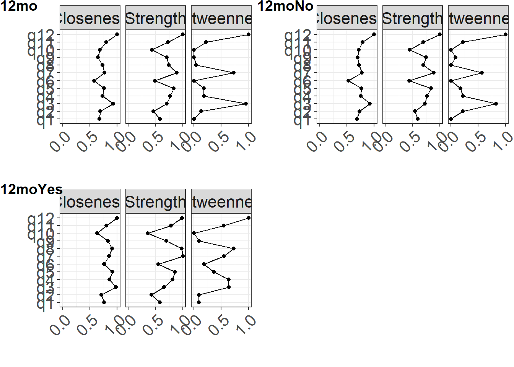
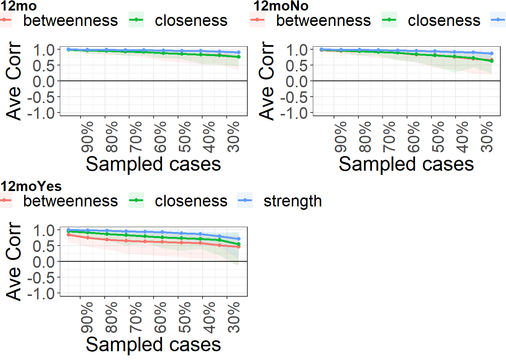

3-paper_codes
bernard-liew
2021-10-18
Last updated: 2022-01-18
Checks: 6 1
Knit directory: acl_rsi/
This reproducible R Markdown analysis was created with workflowr (version 1.6.2). The Checks tab describes the reproducibility checks that were applied when the results were created. The Past versions tab lists the development history.
The R Markdown file has staged changes. To know which version of the R Markdown file created these results, you’ll want to first commit it to the Git repo. If you’re still working on the analysis, you can ignore this warning. When you’re finished, you can run wflow_publish to commit the R Markdown file and build the HTML.
Great job! The global environment was empty. Objects defined in the global environment can affect the analysis in your R Markdown file in unknown ways. For reproduciblity it’s best to always run the code in an empty environment.
The command set.seed(20210219) was run prior to running the code in the R Markdown file. Setting a seed ensures that any results that rely on randomness, e.g. subsampling or permutations, are reproducible.
Great job! Recording the operating system, R version, and package versions is critical for reproducibility.
Nice! There were no cached chunks for this analysis, so you can be confident that you successfully produced the results during this run.
Great job! Using relative paths to the files within your workflowr project makes it easier to run your code on other machines.
Great! You are using Git for version control. Tracking code development and connecting the code version to the results is critical for reproducibility.
The results in this page were generated with repository version 19fd7a2. See the Past versions tab to see a history of the changes made to the R Markdown and HTML files.
Note that you need to be careful to ensure that all relevant files for the analysis have been committed to Git prior to generating the results (you can use wflow_publish or wflow_git_commit). workflowr only checks the R Markdown file, but you know if there are other scripts or data files that it depends on. Below is the status of the Git repository when the results were generated:
Ignored files:
Ignored: .Rhistory
Ignored: .Rproj.user/
Ignored: analysis/figure/
Ignored: manuscript/
Untracked files:
Untracked: output/nct_res.RDS
Unstaged changes:
Modified: analysis/3-paper_codes.Rmd
Modified: output/nw_res.RDS
Staged changes:
Modified: analysis/2-analysis.Rmd
New: analysis/3-paper_codes.Rmd
Note that any generated files, e.g. HTML, png, CSS, etc., are not included in this status report because it is ok for generated content to have uncommitted changes.
There are no past versions. Publish this analysis with wflow_publish() to start tracking its development.
Load package
# Helper
library (tidyverse)
library (arsenal)
library (cowplot)
library (arsenal)
# Modelling
library (huge)
library (bootnet)
library (qgraph)
library (NetworkComparisonTest)
# Parallel
library (furrr)
# Styling
library (kableExtra)
library (officer)
library (flextable)Import
rts_12 = "no" if either missing "no", or "yes_lower". Everything else is "yes".
df <- readRDS ("output/dat_acl.RDS") %>%
mutate (rts_6binary = ifelse (rts_6 %in% c("na_no_prior", "no"), "no",
ifelse (rts_6 %in% c("NA"), "na", "yes")),
rts_12binary = ifelse (rts_12 %in% c("no", "yes_lower", "yes_train"), "no", "yes"))Descriptive statistics
ACL-RSI item scores
df_plot <- res %>%
select (id,data) %>%
unnest (data) %>%
pivot_longer(cols = starts_with("q"),
names_to = "Items",
values_to = "val") %>%
mutate (Items = factor (Items, levels = names (res$data[[1]])))
df_plot <- df_plot %>%
group_by(id, Items) %>%
summarise(Mean = mean (val, na.rm = TRUE),
Sd = sd (val, na.rm = TRUE)) %>%
filter (!grepl("6m", id)) %>%
mutate (id = factor (id, levels = c("12mo","12moNo", "12moYes"))) %>%
#mutate_if(is.numeric, round, 2) %>%
as.data.frame()`summarise()` has grouped output by 'id'. You can override using the `.groups` argument. f <- ggplot (df_plot) +
geom_point(aes (x = Items, y = Mean),
stat = "identity") +
geom_errorbar(aes (x = Items,
ymin = Mean - Sd,
ymax = Mean + Sd),
width = 0) +
facet_wrap(~ id, scales = "fixed", ncol = 2) +
labs (x = "Items",
y = "Score") +
theme_cowplot()
f
# pdf(width = 15, height = 8, file = "manuscript/sm_fig1.pdf")
# f
# dev.off()Demographics
demo <- df %>%
select (age_surg,
graft,
sex,
pre_sports_freq,
pre_sports_freql,
pre_sports_level,
pre_sports_type,
timebetween,
actual12mth,
rts_12,
rts_12binary)
skimr::skim (demo)| Name | demo |
| Number of rows | 441 |
| Number of columns | 11 |
| _______________________ | |
| Column type frequency: | |
| character | 8 |
| numeric | 3 |
| ________________________ | |
| Group variables | None |
Variable type: character
| skim_variable | n_missing | complete_rate | min | max | empty | n_unique | whitespace |
|---|---|---|---|---|---|---|---|
| graft | 0 | 1.00 | 2 | 23 | 0 | 12 | 0 |
| sex | 0 | 1.00 | 1 | 1 | 0 | 2 | 0 |
| pre_sports_freq | 2 | 1.00 | 17 | 19 | 0 | 3 | 0 |
| pre_sports_freql | 2 | 1.00 | 10 | 11 | 0 | 3 | 0 |
| pre_sports_level | 2 | 1.00 | 3 | 11 | 0 | 4 | 0 |
| pre_sports_type | 3 | 0.99 | 3 | 32 | 0 | 117 | 0 |
| rts_12 | 0 | 1.00 | 2 | 13 | 0 | 4 | 0 |
| rts_12binary | 0 | 1.00 | 2 | 3 | 0 | 2 | 0 |
Variable type: numeric
| skim_variable | n_missing | complete_rate | mean | sd | p0 | p25 | p50 | p75 | p100 | hist |
|---|---|---|---|---|---|---|---|---|---|---|
| age_surg | 0 | 1 | 24.61 | 7.38 | 13.67 | 18.30 | 23.50 | 28.73 | 46.94 | <U+2587><U+2587><U+2585><U+2581><U+2581> |
| timebetween | 0 | 1 | 5.83 | 0.66 | 3.90 | 5.43 | 5.80 | 6.16 | 8.06 | <U+2581><U+2583><U+2587><U+2582><U+2581> |
| actual12mth | 0 | 1 | 12.15 | 0.58 | 10.96 | 11.79 | 11.95 | 12.34 | 14.69 | <U+2581><U+2587><U+2582><U+2581><U+2581> |
out <- tableby(~. , data=demo)
summary (out)
| | Overall (N=441) |
|:--------------------------------------------------|:---------------:|
|**age_surg** | |
| Mean (SD) | 24.605 (7.385) |
| Range | 13.668 - 46.942 |
|**graft** | |
| -N/R | 1 (0.2%) |
| 6strand graft (ST3/Gr3) | 1 (0.2%) |
| C/L PT | 1 (0.2%) |
| LARS | 1 (0.2%) |
| PT | 10 (2.3%) |
| QT | 42 (9.5%) |
| ST | 1 (0.2%) |
| ST/Gr | 36 (8.2%) |
| ST/GR | 327 (74.1%) |
| ST3/Gr2 | 5 (1.1%) |
| ST3/GR2 | 14 (3.2%) |
| ST4 | 2 (0.5%) |
|**sex** | |
| f | 184 (41.7%) |
| m | 257 (58.3%) |
|**pre_sports_freq** | |
| N-Miss | 2 |
| 1-3 days per week | 175 (39.9%) |
| 1-3 times per month | 11 (2.5%) |
| 4-7 days per week | 253 (57.6%) |
|**pre_sports_freql** | |
| N-Miss | 2 |
| 1-3days/mth | 11 (2.5%) |
| 1-3days/wk | 175 (39.9%) |
| 4-7days/wk | 253 (57.6%) |
|**pre_sports_level** | |
| N-Miss | 2 |
| competitive | 168 (38.3%) |
| freq | 231 (52.6%) |
| pro | 10 (2.3%) |
| some | 30 (6.8%) |
|**pre_sports_type** | |
| N-Miss | 3 |
| aerobics | 1 (0.2%) |
| afl | 1 (0.2%) |
| Afl | 7 (1.6%) |
| AFL | 29 (6.6%) |
| afl (aussie rules) | 1 (0.2%) |
| AFL Football | 2 (0.5%) |
| AFL, Bobsled, track & field | 1 (0.2%) |
| AFL, Triathlon | 1 (0.2%) |
| AFL9s | 1 (0.2%) |
| Amateur Australian Rules | 1 (0.2%) |
| American Football | 1 (0.2%) |
| American Football/Gridiron | 1 (0.2%) |
| Athletics | 2 (0.5%) |
| Aussie rules | 5 (1.1%) |
| Aussie Rules | 3 (0.7%) |
| aussie rules football | 1 (0.2%) |
| Aussie Rules Football | 1 (0.2%) |
| Australia rules | 1 (0.2%) |
| Australia rules footy | 1 (0.2%) |
| Australian Football | 2 (0.5%) |
| australian rules | 3 (0.7%) |
| Australian rules | 21 (4.8%) |
| Australian Rules | 29 (6.6%) |
| Australian Rules (VAFA) | 1 (0.2%) |
| Australian rules football | 4 (0.9%) |
| Australian Rules football | 1 (0.2%) |
| Australian Rules Football | 8 (1.8%) |
| Australian rules footy | 1 (0.2%) |
| basketball | 2 (0.5%) |
| Basketball | 32 (7.3%) |
| BASKETBALL | 1 (0.2%) |
| Basketball/netball | 1 (0.2%) |
| brazilian jiu jitsu | 1 (0.2%) |
| Brazilian jiu jitsu | 1 (0.2%) |
| Cheerleading | 1 (0.2%) |
| Competitive Cheerleading | 1 (0.2%) |
| Cricket | 5 (1.1%) |
| Crossfit | 1 (0.2%) |
| cycling | 3 (0.7%) |
| Cycling | 1 (0.2%) |
| Dance | 1 (0.2%) |
| Dance (Tap, Jazz, Contemporary) | 1 (0.2%) |
| Dodgeball | 1 (0.2%) |
| Equine Show jumping | 1 (0.2%) |
| Fencing | 1 (0.2%) |
| Field hockey | 1 (0.2%) |
| Field Hockey | 1 (0.2%) |
| football | 6 (1.4%) |
| Football | 20 (4.6%) |
| football - AFL | 1 (0.2%) |
| Football (AFL) | 1 (0.2%) |
| Football afl | 1 (0.2%) |
| Football Aus Rules | 1 (0.2%) |
| Football/Aussie Rules | 1 (0.2%) |
| Footy | 1 (0.2%) |
| futsal | 1 (0.2%) |
| Futsal | 3 (0.7%) |
| Golf | 1 (0.2%) |
| Gridiron | 1 (0.2%) |
| Gym | 1 (0.2%) |
| Gym workouts/classes | 1 (0.2%) |
| gymnastics | 1 (0.2%) |
| Gymnastics | 2 (0.5%) |
| Hockey | 7 (1.6%) |
| indoor soccer | 1 (0.2%) |
| Indoor soccer | 3 (0.7%) |
| Indoor Soccer | 3 (0.7%) |
| Jiu jitsu | 1 (0.2%) |
| Jiu Jitsu | 1 (0.2%) |
| jogging/sprinting | 1 (0.2%) |
| Judo | 2 (0.5%) |
| Karate | 1 (0.2%) |
| Kickboxing | 1 (0.2%) |
| Kitesurfing | 2 (0.5%) |
| Krav Maga (martial arts) | 1 (0.2%) |
| Lacrosse | 1 (0.2%) |
| Lawn bowls | 1 (0.2%) |
| mixed martial arts | 1 (0.2%) |
| motocross | 1 (0.2%) |
| Motocross | 1 (0.2%) |
| Motorcross | 1 (0.2%) |
| netball | 8 (1.8%) |
| Netball | 78 (17.8%) |
| Netball, waterskiing | 1 (0.2%) |
| pilates/yoga | 1 (0.2%) |
| Pole dancing | 1 (0.2%) |
| Regular weights inc squatting | 1 (0.2%) |
| Roller derby | 1 (0.2%) |
| Rowing | 1 (0.2%) |
| Rugby | 1 (0.2%) |
| Rugby League | 1 (0.2%) |
| Rugby union | 1 (0.2%) |
| Rugby Union | 2 (0.5%) |
| running | 2 (0.5%) |
| Running | 5 (1.1%) |
| Running (orienteering) | 1 (0.2%) |
| Skiing | 2 (0.5%) |
| Skiing. | 1 (0.2%) |
| Snow skiing - freestyle coaching | 1 (0.2%) |
| Snowboard/wakeboarding | 1 (0.2%) |
| Snowboarding | 1 (0.2%) |
| soccer | 6 (1.4%) |
| Soccer | 36 (8.2%) |
| Soccer, skiing | 1 (0.2%) |
| Softball | 2 (0.5%) |
| Squash | 1 (0.2%) |
| Surfing | 2 (0.5%) |
| taekwondo | 1 (0.2%) |
| Taekwondo | 2 (0.5%) |
| Ten Pin Bowling | 1 (0.2%) |
| tennis | 2 (0.5%) |
| Tennis | 5 (1.1%) |
| Touch Rugby | 3 (0.7%) |
| Track and field | 1 (0.2%) |
| Ultimate Frisbee | 1 (0.2%) |
| walking the dog | 1 (0.2%) |
| Water skiing | 1 (0.2%) |
|**timebetween** | |
| Mean (SD) | 5.834 (0.663) |
| Range | 3.902 - 8.061 |
|**actual12mth** | |
| Mean (SD) | 12.153 (0.580) |
| Range | 10.958 - 14.695 |
|**rts_12** | |
| no | 154 (34.9%) |
| yes_lower | 60 (13.6%) |
| yes_same_high | 115 (26.1%) |
| yes_train | 112 (25.4%) |
|**rts_12binary** | |
| no | 326 (73.9%) |
| yes | 115 (26.1%) |Network analysis
Create datasets
# 12th month RSI data
dat1 <- df%>%
select (matches ("_12")) %>%
select (!matches ("ax_6m|ax_12m|aclrsi|rts_"))
# 12th month RSI data on subgroup RTS at 12mo = no
dat2 <- df%>%
filter (rts_12binary == "no") %>%
select (matches ("_12")) %>%
select (!matches ("ax_6m|ax_12m|aclrsi|rts_"))
# 12th month RSI data on subgroup RTS at 12mo = yes
dat3 <- df%>%
filter (rts_12binary == "yes") %>%
select (matches ("_12")) %>%
select (!matches ("ax_6m|ax_12m|aclrsi|rts_"))
var_names <- str_remove (names (dat1), "_6")
names(dat1) <- names(dat2) <- names(dat3) <- paste0("q", 1:ncol (dat1))
res <- tibble (subgrp = c(1:3),
id = c("12mo", "12moNo", "12moYes"),
data = list (dat1, dat2, dat3))Perform analysis
B <- 1000
plan (multisession)
stats_type <- c("strength", "betweenness", "closeness")
res <- res %>%
mutate (dat_norm = map (data, huge.npn)) %>%
mutate (nw = map (dat_norm, estimateNetwork,
default="EBICglasso",
corMethod = "cor",
tuning = 0.5,
lambda.min.ratio = 0.001,
corArgs =
list(method = "pearson",
use = "pairwise.complete.obs"))) %>%
# Get centrality measures
mutate (centr = map (nw, centralityTable)) %>%
mutate (centr_stb = future_map (nw,
bootnet,
nBoots = B,
type = "case",
statistics = stats_type,
.options = furrr_options(seed = TRUE))) %>%
mutate (cor_stb = map (centr_stb,
corStability)) %>%
mutate (edgewts = future_map (nw,
bootnet,
nBoots = B,
.options = furrr_options(seed = TRUE)))
# NCT
nct_res <- NCT(res$nw[[2]],
res$nw[[3]],
it = 1000,
test.edges=TRUE,
edges="all",
test.centrality = TRUE,
centrality = "all",
p.adjust.methods = "none",
verbose = FALSE,
progressbar = FALSE)
saveRDS(res,
"output/nw_res.RDS")
saveRDS(nct_res,
"output/nct_res.RDS") Results
Plot network
node_font_size <- 1.5
circle_size <- 12
title_font_size <- 2
legend_font_size <- 0.5# Export
pdf(width = 8, height = 6, file = "manuscript/fig1.pdf")
par(mfrow= c(2,2))
# Visualize network
p1 <- plot (res$nw[[1]], title = res$id[[1]], label.cex = node_font_size, vsize = circle_size,
curve = 0.4, curveAll = TRUE, groups = as.factor (groups), title.cex = title_font_size, legend.cex = 0.7, legend = TRUE)
plot.new( )
plot (res$nw[[2]], title = res$id[[2]], layout = p1$layout, label.cex = node_font_size, vsize = circle_size,
curve = 0.4, curveAll = TRUE, groups = as.factor (groups), title.cex = title_font_size, legend.cex = legend_font_size, legend = FALSE)
plot (res$nw[[3]], title = res$id[[3]], layout = p1$layout, label.cex = node_font_size, vsize = circle_size,
curve = 0.4, curveAll = TRUE, groups = as.factor (groups), title.cex = title_font_size, legend.cex = legend_font_size, legend = FALSE)
dev.off()par(mfrow= c(2,2))
# Visualize network
p1 <- plot (res$nw[[1]], title = res$id[[1]], label.cex = node_font_size, vsize = circle_size,
curve = 0.4, curveAll = TRUE, groups = as.factor (groups), title.cex = title_font_size, legend.cex = 0.7, legend = TRUE)
plot.new( )
plot (res$nw[[2]], title = res$id[[2]], layout = p1$layout, label.cex = node_font_size, vsize = circle_size,
curve = 0.4, curveAll = TRUE, groups = as.factor (groups), title.cex = title_font_size, legend.cex = legend_font_size, legend = FALSE)
plot (res$nw[[3]], title = res$id[[3]], layout = p1$layout, label.cex = node_font_size, vsize = circle_size,
curve = 0.4, curveAll = TRUE, groups = as.factor (groups), title.cex = title_font_size, legend.cex = legend_font_size, legend = FALSE)
Plot edge weights stability
w_fig <- map (res$edgewts, plot, order = "sample", CIstyle = "quantiles")
w_fig <- map (w_fig, ~.x +
theme(text = element_text(size = 12)),
include = "all", print = FALSE, scale = "relative")
cowplot::plot_grid(plotlist = w_fig,
labels = res$id,
vjust = 1, hjust = -1, ncol = 3)
Plot centrality
c_fig <- map (res$nw, centralityPlot, include = c("Closeness", "Strength", "Betweenness"),
print = FALSE, scale = "relative") %>%
map (~.x +
scale_x_continuous(breaks= c(0, 0.5, 1), lim = c(0, 1)) +
theme(text = element_text(size = 20),
axis.text.x = element_text(angle = 45, hjust = 1)),
include = "all", print = FALSE, scale = "relative")Note: relative centrality indices are shown on x-axis rather than raw centrality indices.
Note: relative centrality indices are shown on x-axis rather than raw centrality indices.
Note: relative centrality indices are shown on x-axis rather than raw centrality indices.cowplot::plot_grid(plotlist = c_fig,
labels = res$id,
vjust = 1, hjust = 0, ncol = 2)
Plot centrality stability
s_fig <- map (res$centr_stb, plot, statistics = c("closeness", "strength", "betweenness"))
s_fig <- map (s_fig, ~.x +
ylab ("Ave Corr") +
theme(text = element_text(size = 20),
axis.text.x = element_text(angle = 90, hjust = 1)),
include = "all", print = FALSE, scale = "relative")
cowplot::plot_grid(plotlist = s_fig,
labels = res$id,
vjust = 1, hjust = 0, ncol = 2)
Get CS coefficient
cs_coef <- res %>%
select (id, cor_stb) %>%
unnest () %>%
ungroup() %>%
mutate (measure = rep (c("betweenness", "closeness", "strength"), 3)) %>%
mutate (CS = round (cor_stb, 2))
cs_coef %>%
knitr::kable (caption = "Stability of centrality indices")| id | cor_stb | measure | CS |
|---|---|---|---|
| 12mo | 0.3605442 | betweenness | 0.36 |
| 12mo | 0.5170068 | closeness | 0.52 |
| 12mo | 0.7505669 | strength | 0.75 |
| 12moNo | 0.3619632 | betweenness | 0.36 |
| 12moNo | 0.3619632 | closeness | 0.36 |
| 12moNo | 0.7484663 | strength | 0.75 |
| 12moYes | 0.0000000 | betweenness | 0.00 |
| 12moYes | 0.2086957 | closeness | 0.21 |
| 12moYes | 0.5130435 | strength | 0.51 |
NCT
einv <- nct_res$einv.perm
einv.mean <- apply (einv, c(1,2), mean)
einv.lb <- apply (einv, c(1,2), quantile, 0.025)
einv.ub <- apply (einv, c(1,2), quantile, 0.975)
rownames(einv.mean) <- colnames(einv.mean) <-
rownames(einv.lb) <- colnames(einv.lb) <-
rownames(einv.ub) <- colnames(einv.ub) <- paste0("q", 1:12)
einv.mean <- einv.mean %>%
rstatix::cor_gather()
einv.lb <-einv.lb %>%
rstatix::cor_gather()
einv.ub <- einv.ub %>%
rstatix::cor_gather()
einv_pval <- nct_res$einv.pvals %>%
rename (var2 = Var1,
var1 = Var2)%>%
mutate_if (is.factor, as.character)
einv_df <- data.frame(einv.mean,
lb = einv.lb$cor,
ub = einv.ub$cor) %>%
distinct (cor, lb, ub, .keep_all= TRUE) %>%
inner_join(einv_pval, by = c("var1", "var2"))
einv_df %>%
filter (`p-value` < 0.05) var1 var2 cor lb ub p-value
1 q7 q2 0.06843029 0.002436637 0.1695355 0.040
2 q12 q3 0.07914166 0.003728119 0.2060223 0.029
3 q8 q5 0.07863373 0.003284935 0.1994877 0.044Centrality
cen.perm <- nct_res$diffcen.perm %>%
data.frame() %>%
select (matches ("\\.strength"))
cen.perm.mean <- apply (cen.perm, 2, mean)
cen.perm.lb <- apply (cen.perm, 2, quantile, 0.025)
cen.perm.ub <- apply (cen.perm, 2, quantile, 0.975)
cen.pval <- nct_res$diffcen.pval %>%
data.frame() %>%
select (starts_with ("strength"))
cen.pval_df <- data.frame(var = paste0("q", 1:12),
est = cen.perm.mean,
lb = cen.perm.lb,
ub = cen.perm.ub,
p_val = cen.pval$strength)
cen.pval_df %>%
filter ( p_val < 0.05) var est lb ub p_val
q8.strength q8 -0.004973974 -0.2558443 0.2143619 0.014
sessionInfo()R version 4.1.2 (2021-11-01)
Platform: x86_64-w64-mingw32/x64 (64-bit)
Running under: Windows 10 x64 (build 19042)
Matrix products: default
locale:
[1] LC_COLLATE=English_United Kingdom.1252
[2] LC_CTYPE=English_United Kingdom.1252
[3] LC_MONETARY=English_United Kingdom.1252
[4] LC_NUMERIC=C
[5] LC_TIME=English_United Kingdom.1252
attached base packages:
[1] stats graphics grDevices utils datasets methods base
other attached packages:
[1] flextable_0.6.9 officer_0.4.0
[3] kableExtra_1.3.4 furrr_0.2.3
[5] future_1.23.0 NetworkComparisonTest_2.2.1
[7] qgraph_1.9 bootnet_1.5
[9] huge_1.3.5 cowplot_1.1.1
[11] arsenal_3.6.3 forcats_0.5.1
[13] stringr_1.4.0 dplyr_1.0.7
[15] purrr_0.3.4 readr_2.0.2
[17] tidyr_1.1.4 tibble_3.1.5
[19] ggplot2_3.3.5 tidyverse_1.3.1
loaded via a namespace (and not attached):
[1] utf8_1.2.2 R.utils_2.11.0 tidyselect_1.1.1
[4] lme4_1.1-27.1 htmlwidgets_1.5.4 grid_4.1.2
[7] munsell_0.5.0 codetools_0.2-18 withr_2.4.2
[10] colorspace_2.0-2 NetworkToolbox_1.4.2 highr_0.9
[13] knitr_1.36 uuid_1.0-2 rstudioapi_0.13
[16] stats4_4.1.2 listenv_0.8.0 labeling_0.4.2
[19] git2r_0.28.0 repr_1.1.3 mnormt_2.0.2
[22] farver_2.1.0 rprojroot_2.0.2 parallelly_1.28.1
[25] vctrs_0.3.8 generics_0.1.1 xfun_0.27
[28] R6_2.5.1 doParallel_1.0.16 smacof_2.1-3
[31] assertthat_0.2.1 promises_1.2.0.1 scales_1.1.1
[34] nnet_7.3-16 gtable_0.3.0 globals_0.14.0
[37] weights_1.0.4 workflowr_1.6.2 rlang_0.4.12
[40] systemfonts_1.0.3 splines_4.1.2 rstatix_0.7.0
[43] wordcloud_2.6 broom_0.7.10 checkmate_2.0.0
[46] yaml_2.2.1 reshape2_1.4.4 abind_1.4-5
[49] modelr_0.1.8 backports_1.3.0 httpuv_1.6.3
[52] Hmisc_4.6-0 tools_4.1.2 psych_2.1.9
[55] lavaan_0.6-9 ellipsis_0.3.2 jquerylib_0.1.4
[58] RColorBrewer_1.1-2 proxy_0.4-26 polynom_1.4-0
[61] Rcpp_1.0.7 plyr_1.8.6 base64enc_0.1-3
[64] rpart_4.1-15 pbapply_1.5-0 haven_2.4.3
[67] cluster_2.1.2 fs_1.5.0 magrittr_2.0.1
[70] data.table_1.14.2 reprex_2.0.1 tmvnsim_1.0-2
[73] mvtnorm_1.1-3 hms_1.1.1 evaluate_0.14
[76] jpeg_0.1-9 readxl_1.3.1 gridExtra_2.3
[79] shape_1.4.6 compiler_4.1.2 ellipse_0.4.2
[82] mice_3.13.0 crayon_1.4.2 minqa_1.2.4
[85] R.oo_1.24.0 htmltools_0.5.2 corpcor_1.6.10
[88] later_1.3.0 tzdb_0.2.0 Formula_1.2-4
[91] snow_0.4-4 lubridate_1.8.0 DBI_1.1.1
[94] mgm_1.2-12 dbplyr_2.1.1 MASS_7.3-54
[97] boot_1.3-28 IsingSampler_0.2.1 Matrix_1.3-4
[100] IsingFit_0.3.1 car_3.0-12 cli_3.1.0
[103] heplots_1.3-9 R.methodsS3_1.8.1 gdata_2.18.0
[106] parallel_4.1.2 igraph_1.2.7 pkgconfig_2.0.3
[109] skimr_2.1.3 foreign_0.8-81 xml2_1.3.2
[112] foreach_1.5.1 pbivnorm_0.6.0 svglite_2.0.0
[115] bslib_0.3.1 webshot_0.5.2 rvest_1.0.2
[118] digest_0.6.28 rmarkdown_2.11 cellranger_1.1.0
[121] htmlTable_2.3.0 gdtools_0.2.3 gtools_3.9.2
[124] nloptr_1.2.2.2 lifecycle_1.0.1 nlme_3.1-153
[127] glasso_1.11 jsonlite_1.7.2 carData_3.0-4
[130] viridisLite_0.4.0 fansi_0.5.0 pillar_1.6.4
[133] lattice_0.20-45 fastmap_1.1.0 httr_1.4.2
[136] plotrix_3.8-2 survival_3.2-13 glue_1.4.2
[139] networktools_1.4.0 zip_2.2.0 fdrtool_1.2.16
[142] png_0.1-7 iterators_1.0.13 candisc_0.8-6
[145] glmnet_4.1-2 class_7.3-19 stringi_1.7.5
[148] sass_0.4.0 nnls_1.4 latticeExtra_0.6-29
[151] eigenmodel_1.11 e1071_1.7-9